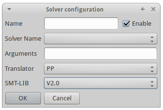

SMT Solvers Plug-in
For developer support, see SMT Solvers Plug-in Developer Support
|
Introduction
The SMT plug-in allows users to use SMT solvers within Rodin. This plug-in is maintained by SYSTEREL (See sources [1]).
Since version 0.8:
- Some SMT solvers (veriT and Cvc3) are bundled within the plug-in. Therefore, it is not necessary (but still possible) to install another copy of these solvers.
- An Auto-Tactic with SMT profile is available. Thus, it is not necessary (but still possible) to create a new profile to use SMT solvers tactics (see Selecting an SMT auto-tactic profile to use this profile).
Installation
You will need to:
- Install the Rodin Platform.
- Install the SMT Solvers Plug-in into Rodin.
- Install any additional SMT-solvers you want to use.
Installing the Rodin Platform
Download the latest Rodin (Core) Platform corresponding to your operating system and install it [2].
Installing the SMT Solvers Plug-in
Launch Rodin and go to Help > Install New Software....
{kind=link}
Select the Rodin Platform Update Site: Rodin - http://rodin-b-sharp.sourceforge.net/updates.

Unfold the Prover Extensions category, and select the SMT Solvers feature. Click Next.
{kind=link}
Review the item to be installed and click Next.
{kind=link}
Read and accept the terms of the license agreement to install the plug-in. Then click Finish.
{kind=link}
A security warning appears because the feature content is unsigned. Click Ok.
{kind=link}
Click Restart Now.
The SMT Solvers Plug-in is now installed.
Usage
Since version 0.8.0, the SMT solver veriT and CVC3 are bundled within the plug-in. To use additional solvers, see #Installing additional SMT solvers.
Discharging a Sequent
We give an example of Event-B model of which proof obligation can be discharged using an SMT solver:
{kind=link}
{kind=link}
thm1 is a theorem which must be proved given axioms axm2..axm5.
Since we installed SMT Solvers Plug-in into the Rodin Platform, the SMT tactic button is now accessible in the Proof Control bar.
{kind=link}
Clicking on this button will call successively every enabled SMT solver configurations, which will discharge the proof obligation if possible:
{kind=link}
When the tactic is applied successfully, this means that the reasonner created the new proof rule:

If the solver used to discharge the sequent is able to extract an unsatisfiable core, the proof rule will be produced using it. This is the case for veriT.
Installing additional SMT solvers
Currently, the SMT plug-in has been tested with the following solvers:
- Alt-Ergo (INRIA Saclay)
- CVC3 (New York and Iowa Universities)
- veriT (Loria Nancy and UFRN)
- Z3 (Microsoft Research)
Installing veriT
The veriT solver can be downloaded from [3]. Compilation and installation instructions are in the INSTALL file.
If you want the plug-in to extract unsatisfiable cores from veriT proofs, make sure that the proof production is on in Makefile.config :
# PROOF_PRODUCTION = NO PROOF_PRODUCTION = YES
The following tools are needed by the installation process (Debian/Ubuntu platforms):
- gcc, g++: compilers
- make, ar, ranlib: build process
- wget, tar, patch: to fetch GMP and Minisat
- bison, flex, m4: build compilers and preprocessing
Do not forget to install the E-prover as well[4] (eprover package on Ubuntu platforms).
Installing Alt-Ergo
The alt-ergo solver can be downloaded from http://alt-ergo.lri.fr/, or installed using the Ubuntu repository: alt-ergo package.
Installing CVC3
The CVC3 solver can be downloaded from http://cs.nyu.edu/acsys/cvc3/download.html, or installed using the Ubuntu repository: cvc3 package.
Installing Z3
The Z3 solver can be downloaded from http://research.microsoft.com/en-us/um/redmond/projects/z3/download.html.
Connect added solvers to the Rodin Platform
In order to use some SMT Solver, you must connect it to the Rodin platform by adding it to the list of known solvers, and adding SMT configurations to be used by the SMT tactic.
There can be several configurations (i.e. parameterization) targetting the same SMT solver.
Since version 0.8.0, some SMT solvers are bundled within the plug-in, and some default configurations are already available. To use the plug-in right now with these solvers, see #Usage.
To display the SMT solvers page, open the Preferences window: Window > Preferences, and unfold the SMT section in order to display the Configurations page.
{kind=link}
Adding a new solver to Rodin
To use a new SMT solver in Rodin, click the Add button next to the list of known solvers.
{kind=link}
- Fill the Name field with the name you want to give to this solver.
- Select the kind of the solver if it appears in the combo box. In this case, this will let the plug-in use some specific options of the solver to improve its integration. If it does not appear in the list, just select unknown.
- Click Browse to enter the path to the solver executable.
- Click OK.
Editing SMT Solver information
You can edit the information given when adding a SMT solver by clicking the Edit... button after having selected the solver information to edit in the list.
Note that the bundled solver connections cannot be edited.
Removing an SMT Solver information
You can remove location information on a selected solver by clicking the Remove button next to the list of known solvers.
Note that bundled solvers connections cannot be removed.
Restoring Default Solvers
Bundled solvers are set as default solvers. A click on the Restore Defaults button will remove all the solvers which are not bundled within the plugin.
Customizing SMT Solvers Configurations
In order to run the various solvers from the SMT tactic, one has to define solver configurations.
We call SMT solver configuration a settled configuration of a solver, with ad-hoc properties such as its parameters and the SMT-LIB version of the benchmarks it will execute.
For example, such configurations can execute a given solver with specific options, or specific versions of the solver.
Since version 0.8.0, some SMT solvers are bundled within the plug-in. Some configurations of these solvers is already available in the plug-in : for example, the bundled veriT configuration launches the veriT solver (without e-prover), using the translation to SMT-LIB 2.0 and with the unsat-core extraction enabled. To use the plug-in right now with these configurations, see #Usage.
To display the SMT solvers page, open the Preferences window: Window > Preferences, and unfold the SMT section in order to display the Configurations page.
Adding a New Solver Configuration
In order to run the various solvers from the SMT tactic, one has to define solver configurations.
A configuration contains :
- its name,
- its status from enabled, not enabled,
- the name of the solver from the list of known solvers,
- the parameterization of the solver under the form of command line arguments',
- the Rodin to SMT-LIB translator to be used (either PP or veriT),
- the version of the SMT-LIB to be used ( V1.2 or V2.0).
A configuration is a preset (e.g. customization) of one solver binary which appears in the list of known solvers.
Thus there can be several configurations (i.e. parameterization) targetting the same SMT solver.

{kind=link}
To add a new SMT solver configuration into Rodin, just click the Add button next to the list of solver configurations.
- Fill the Name with the name you want to give to this configuration.
- Choose whether this configuration shall be run or not when calling the SMT tactic by checking the Enable checkbox. This value can be changed directly in the Configurations page too.
- Select the solver you want to use in this configuration. A solver to choose among the connected solvers of the Solvers page.
- Fill the Solver arguments if needed. For example, you must enter here the solver option which sets the version of SMT-LIB to be used by the solver.
- Select which SMT translator to used (just select PP unless you know why).
- Select which version of SMT-LIB must be used by the plug-in (just select V2.0 unless you know why).
- Enter the value of the time out delay, which is, the time (in milliseconds) after which the platform will terminate the solver if it has not yet answered.
- Click OK.
Enabling/Disabling a Solver Configuration
When you will call the SMT tactic, only the enabled configurations will be executed.
One can enable or disable a configuration from the configurations page.
To do this, just tick or untick the checkbox corresponding to a given configuration.
{kind=link}
Editing a Solver Configuration
You can edit all the informations given when setting a new solver configuration by clicking the Edit button. The bundled configurations cannot be edited.
Removing a Solver Configuration
You can remove the selected configuration by clicking the Remove button. The bundled configurations cannot be removed.
Duplicating a Solver Configuration
You can duplicate any configuration by clicking the Duplicate button. This will open the configuration dialog with the information of the original configuration. Just edit them and click OK to add the duplicated configuration.
Restoring Default Solvers Configurations
The default configurations are the bundled ones. A click on the Restore Defaults button will remove all the configurations which are not bundled within the plugin.
Customizing the SMT-LIB translation settings
To display the SMT translation page, open the Preferences window: Window > Preferences and select the SMT node.
{kind=link}
Setting the Translation Directory Path
The plug-in needs to store some temporary files to interact with the external SMT Solver.
By default, this is set to the system temporary directory path.
You can change the directory to use for this purpose, by clicking the corresponding Browse button, and selecting the target directory.
Setting the veriT Path
Since version 0.8.0, the SMT solver veriT is bundled within the plug-in and its path used by default. However, you can change the path to another veriT binary if you want to use another version of it to produce SMT-LIB benchmarks. This information is required if you want to use veriT instead of ppTrans to translate Event-B sequents to SMT-LIB benchmarks. To give a different path, click the corresponding Browse button, and select the veriT binary to use.
Setting the SMT auto tactic timeout
Since version 1.1.0, the timeout of SMT solvers within "All enabled SMT configurations" can be customized. The timeout (in milliseconds) applies to each SMT solver individually. It is used in particular in the "Default Auto Tactic with SMT" profile.
Restoring Default Translation Settings
You can restore the default translation settings values by clicking the Restore Defaults button.
The default veriT path is the path of the bundled veriT solver.
The default translation directory path is the system temporary directory path.
The default timeout is 1000.
SMT Auto-Tactic Profile
One might want to set-up one or several configurations of SMT solver to be used automatically to discharge Event-b sequents in the Rodin platform.
Since version 2.3 of Rodin, it is possible to create new tactic combinations called profiles to be applied automatically (See Advanced Profile Customisation in Rodin_Platform_2.3_Release_Notes and 3.1.8.4 Sequent Prover / Auto/Post Tactic in the preference page of the Rodin User’s Handbook v.2.4).
Since version 0.8.0 of the plug-in, an Auto-Tactic profile using SMT solvers is available in the plug-in. To use this profile, see #Selecting an SMT auto-tactic profile.
Creating a New SMT Auto-Tactic Profile
A reasonable combination using the SMT tactic is an SMT tactic queued to the default auto tactic combination. We show here how to create such a profile.
First, open the Preferences window of the Rodin platform: Window > Preferences.
{kind=link}
Open the Auto/Post Tactic preferences page: Event-B > Sequent Prover > Auto/Post Tactic. Go to the Profiles tab.
{kind=link}
Select the default auto tactic profile, and click Duplicate to duplicate it.
Then, select the duplicated profile, and click Edit to edit it.
{kind=link}
In the tactic profile window, rename the profile, and drag and drop the chosen SMT tactic from the tactics list (in the first column) to the end of the combined tactics (in the second column).

Then click Finish.
Now a new profile combining the SMT tactic with other tactics is created.
Selecting an SMT Auto-Tactic Profile
One may want to use the new SMT auto-tactic profile (available since version 0.8.0 of the plug-in), or a user-defined profile using SMT solvers.
To set it on, go to the Auto/Post Tactic tab.
{kind=link}
Set the tactic profile to be used for auto-tactics up to the one combining the SMT tactic, by using the drop-down menu.
Then click Ok.
Now, the combined tactics of your new profile, including the SMT tactic, will be automatically launched when auto-provers are called.
Bugs and Features Request
- SMT-LIB 2.0 support with the veriT translation approach in developpment
- Full set theory support in progress
Releases Notes
Version 1.1.0
- Preference for auto tactic timeout.
Version 1.0.0
- Cvc3 SMT solver bundled with the plug-in
- User Interface entirely refactored for more intuitive experience: solvers preferences, configurations preferences and translation preferences are now separated into three preferences pages. This change is not backward compatible with previous versions of the plug-in.
- Notably added a button for duplicating a configuration
Version 0.8.0
- Support of SMT-LIB 2.0 in the PP translation approach
- Inclusion of the SMT solver veriT in the plug-in
- Addition of an SMT auto-tactic
- Auto-Tactic profile containing the SMT auto-tactic
- Possibility to parameterize a new SMT tactic
- Integration of solvers successfully tested with:
- Alt-Ergo 0.93
- Cvc3 2011-11-21
- veriT (included in the plug-in)
- z3 3.2
- Cvc4 2011-12-11 (but few theories are available for now)
- Good results in the field of linear integer arithmetic with uninterpreted sort and function symbols
- Good support of basic set theory
- Full set theory support needs to be improved
- Results showed the SMT Solvers Plug-in was a good alternative to the Atelier-B provers
Version 0.1.0
- Initial beta-release.
- Two approaches for translating Event-B to SMT-LIB 1.2:
- with ppTrans (included in Rodin official releases)
- with veriT (must be installed)
- Integration of solvers successfully tested with: (notice that no solver will be included in the plug-in at all)
- Alt-Ergo 0.93
- Cvc3 2011-07-14
- veriT 201107
- z3 2.19
- Good results in the field of linear integer arithmetic with uninterpreted sort and function symbols
- Good support of basic set theory
- Full set theory support needs to be improved
- No SMT-LIB 2.0 support in this release